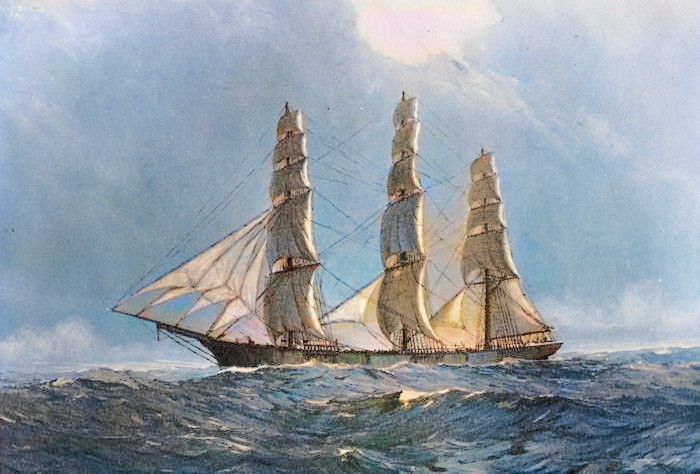
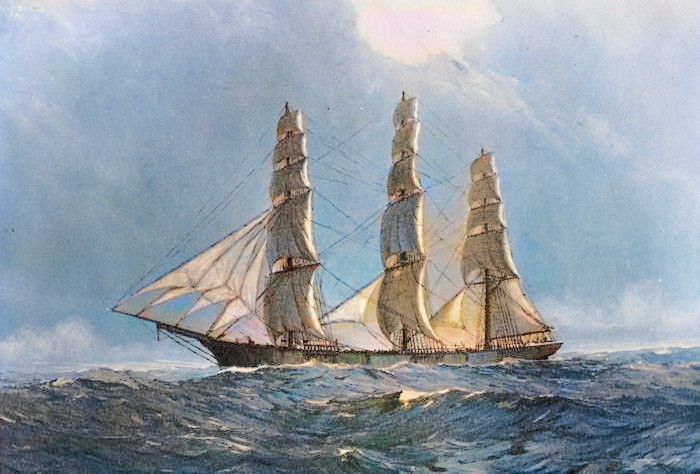
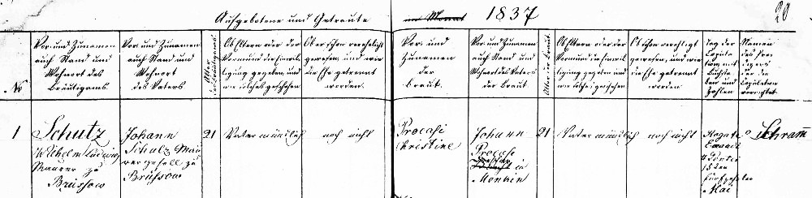
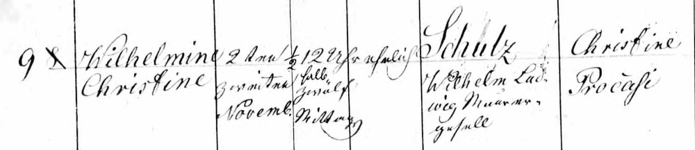
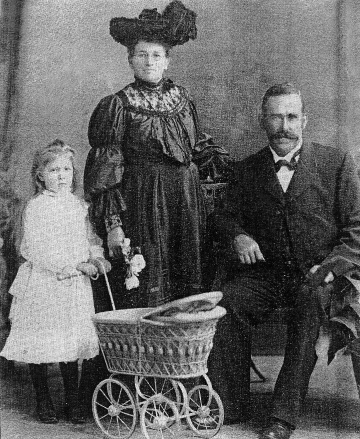
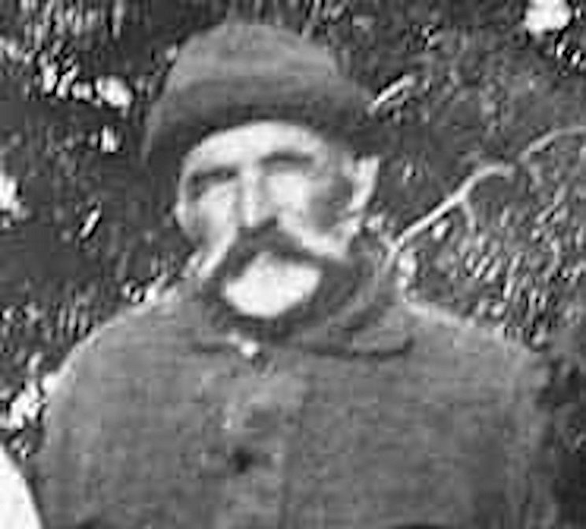

-
Any image can be clicked to see the full sized version. Click again to close it.
To print the page or search for any name, consider showing all the families first.

Old Uckermark with modern border shown in pink
The Schulz Family
(sometimes spelt Schulze, Schultz or Schultze)
The Schulz family hailed from a place called Menkin in the far north-east of Brandenburg. Menkin is in fact the Uckermark's most north-easterly village. Five kilometers away is Brüssow, Uckermark's most northern city which is also the capital of the Brüssow region and where most records were kept.
Menkin began its current history around 1200 as a farming village (Bauerndorf) with a church built out of fieldstones (Feldsteine) which were left over from the ice age. This early settlement was part of the colonisation of the previously Slavic inhabited lands, which had since been abandoned. The 13th century church with a 'modernised' 16th and 17th century interior is still functioning. Greetings from Menkin (clockwise: main street, smithy, lake, park)
Greetings from Menkin (clockwise: main street, smithy, lake, park)
On the northern edge of Menkin is a border marker between Brandenburg and Mecklenburg-Vorpommern known as the "Schlitterstein". It's a huge block of stone 6.2 meters long, 4.7 meters wide and 2.5 meters high moved there presumably by glacial activity during the ice age. Main Estate House (Gutshaus Menkin), rebuilt about 1740
Main Estate House (Gutshaus Menkin), rebuilt about 1740
The early days of Menkin were very different from what has been left over from the destruction which followed after the second world war. The village had a well developed infrastructure, including parklands, as well as many amenities, working farms and businesses.
Mention should be made that the Estate of Menkin came into the possession of the von Winterfeldt family in 1623, when Adam von Winterfeldt (1594-1640) bought it lock stock and barrel. The very last family member holding the estate was Joachim von Winterfeldt-Menkin (1865-1945), who owned it until 1945, when at the age of 80, the property was seized from him and burnt to the ground by the Russian Army. Joachim died during his attempt to flee. During his lifetime, Joachim had brought together the various Red Cross groups scattered across the country, into one unified organisation for which he was the first president.Statistics for Menkin, 1805
from F.W.A. Bratring's Description of the Whole of Mark Brandenburg Vol.2 (Beschreibung der gesammten Mark Brandenburg Vol.2) NameTypeConditionHearthsPeopleLandOwnerChurch admin.AddressMenkinVillage and
NameTypeConditionHearthsPeopleLandOwnerChurch admin.AddressMenkinVillage and
Estate12 Farmers (Ganzbauern), 2 Cottagers (Büdner), 18 Workers (Einlieger), 1 Fisher (Fischer), Smithy (Schmiede), Guesthouse (Krug), Water-driven Flour- and Saw-mill (Wasser, Mahl und Schneidermühle), 1 Forester for over 250 meter of wood (Förster über 250 M. Holz)28227~480
HectareLocal Superviser, von Winterfeld, BerlinBrüssow, PrenzlauBrüssowMap of the Area Surrounding Menkin
Menkin and Wollschow are less than 1km apart
and both are less than 5km from Brüssow.
To the right of Menkin is Lake Menkin (Menkiner See).
On the far right is the River Randow
At the top is Bergholz where Carl Kuss worked as head-miller.
1865 August 5 - Hamburg Departure of the La Rochelle with the eldest sister, Caroline Schulz, her husband Carl Kuss and their two sons, Adolph and Carl. Tragically, baby Carl died on the voyage.

Hamburg Harbour in the nineteenth century
 


1871 December 1 - Hamburg Departure of the Herschel with three more of the Schulz sisters, Friederike, Ernestine and Wilhelmine with her husband Ernst Zimmermann and baby daughter Ernestine.

1872 April 14 - Arrival of the Herschel in Hervey Bay


1873 April 14 - Hamburg Departure of the Reichstag with some more of the Schulz family: parents Wilhelm and Christine (both 57), their son Wilhelm (25), his wife Wilhelmine (27) and their two daughters, Bertha (5) and Ulrike (3) both of whom tragically died during the voyage.
1873 July 18 - Arrival of the Reichstag in Maryborough (only the adults survived the voyage)
Migration in Steps
Getting back to our Schulz family – they migrated to Australia in three stages. It was the children of Wilhelm Ludwig Schulz and his wife Christine Procase who first took those intrepid steps to migrate to new land.
Step 1 - 1865
Firstly, the eldest daughter, Caroline who was married in Menkin in 1863 to the Head-Miller from the nearby village of Bergholz, Carl Kuss, departed Hamburg with her small family, on board the La Rochelle in 1865 heading for Moreton Bay.
1865 May 11 - Permission to Migrate (Kuss was spelt incorrectly)
On the day Caroline and Carl's application for migration was accepted, Caroline's next younger sibling, Friedrich Wilhelm, had his application also accepted. At that time, he was single and had obviously intended to migrate with them, but he didn't.
Instead, Friedrich got married a few months later in Prenzlau to Hanna Marie Adolphine Müller who was born in Mildenitz, about 180 km north-west of Prenzlau. Hanna already had an illegitimate, one year old child, later acknowledged by Friedrich. They then had another two children but the first of those died when only 2 months old. In 1870, the family successfully applied to migrate to North America but no further trace of them has been found.

1865 May 11 - Permission to migrate to Australia
Step 2 - 18711870 May 4 - Permission to migrate to North America
In 1871, a second group from the family left on board the Herschel. This section of the family consisted of the next younger daughter, Wilhelmine, with her husband, August Friedrich Wilhelm Zimmermann, whom she had married in 1869, along with their daughter, as well as the two youngest sisters of the Schulz family, Friederike and Ernestine, the latter of which having eventually become our great-great-grandmother.
Step 3 - 1873
Two years later, the parents, Wilhelm and Christine along with their son, Wilhelm Friedrich August Schulz, and his wife, Wilhelmine Friederike Schulz (daughter of Gottfried Schulz) together with their two daughters also migrated, this time departing from Hamburg on board the Reichstag.
Life in the New Land
Shortly after their arrival, the various members of the Schulz family took up land. The eldest daughter, Caroline and her husband Carl Kuss had arrived first and settled at Marburg. Less than two months after Friederike Christine arrived, she married Victor Francis Pfeffer who lived next door to Henry Schneider senior at Engelsburg. Ernestine followed suit and four months later, married William Pieper who owned land in Vernor. The rest of the members of the Schulz family settled not far from Vernor and Lowood.
Family Lands in The Parishes of Tarampa and NorthLowood is at the far left and Fernvale is at the top right. The Brisbane River runs along the north-western boundary of the district of Vernor, shown with a green outline
» Red outlines indicate locations of various family members:- (from left) Michael Feldhahn (second husband of Ernestine Schulz/Pieper), Ernst Zimmermann and Wilhelmine Schulz (Ernestine's brother-in-law and sister), adjoining Wilhelm Schulz (more likely to be the son than the father), Fred Adermann, Jacob Imhoff, Johann Stümer (whose daughter Marie married Hermann Pieper), Wilhelm Pieper (pink area), William Schroeder (whose daughter Auguste married Adolph Pieper), Fred Riek (father of Wilhelmine Riek who married Friedrich Suchting), 3 lots of August Muckert (whose grandson Percy married Eva Pieper)
» Green areas show the 50 acre blocks of Wilhelm Schulz and Ernest Zimmermann (husband of Wilhelmine Christine Schulz)
» Pink areas show Ernestine Wilhelmine Schulz and Wilhelm Pieper's initial 40 acres at Vernor and later addition.
Wilhelm Ludwig Schulz
and Christine Procase
15 May 1837 Marriage in Menkin of Wilhelm Ludwig Schulz and Christine Procase
No. 1
Schulz, Wilhelm Ludwig, Builder in Brüssow, 21 years old,
son of Johann Schulz, Mason in Brüssow
Procase, Christine, daughter of Johann Procase, of Menkin, 21 years old,The Church in Menkin

1872 Death in Brüssow, of Johann Schulz, Builder (Maurer), aged 82, left 1 son 1 daughter, died Oct 3 at 11:00 at night of old age
As can be seen on the marriage record, the father of Wilhelm Ludwig Schulz was Johann Schulz, a builder (Maurer) in Brüssow. The first wife of Johann Schulz (1790-1872) and therefore the mother of Wilhelm, was Justine Dickholz (1777-1849). A year after Justine's death, Johann, at the age of 59 remarried. His new wife was Esther Gombert (1798-1859), the widow of Christian Friedrich Zahnow (1790-1849). Wilhelm had a younger sister, Friederike Wilhelmine Justine (1823-) who married Ferdinand Friedrich Wilhelm Beskow in 1851. They had 2 sons and 2 daughters.
The parents of Wilhelm's mother, Christine Procase, were Johann Procase (1784-1852) and Sophie Buhz (1790-1847), who were married in Menkin, the village where they were born. Christine had six younger siblings, Christoph Friedrich (1817-1892), Marie Dorothee (1820-1849), Friederike Caroline (1822-), Dorothee Sophie (1825-) and Louise (1827-) and Christian Friedrich (1831-).
Christoph Friedrich Procasi (1817-1892) migrated to USA on 31.05.1868 with his first wife, Louise Kobbert (1819-1869) and son, Wilhelm Friedrich (1850-1893). He married his second wife was Ernestine Hippe (1821-) in Cuyaoga on 17.02.1860. His third wife was called Sophia.
» Wilhelm Ludwig Schulz (18.09.1815 – 09.10.1902)
married Christine Procase (19.07.1815 – 19.03.1896)
in Menkin, Brüssow, 15.05.1837and they had the following children:
Wilhelmine Christine Schulz 02.11.1837 –
*Menkin30.05.1838
†Menkin(6 months old) Caroline Friederike Christine Schulz 04.07.1839 –
*Menkin08.09.1911
†Marburgm. Carl Christian Friedrich Kuss in Menkin, 08.02.1863 Friedrich Wilhelm Schulz
Builder (Maurer)21.02.1842 –
*Menkinunknown
†unknownm. Hanna Marie Adolphine Müller in Prenzlau, 22.10.1865 (the family could have migrated to North America, with permission granted 04.05.1870) Wilhelmine Christine Schulz 30.01.1845 –
*Menkin04.12.1912
†Kalbarm. August Friedrich Wilhelm (Ernest) Zimmermann in Menkin, 15.11.1868 Wilhelm Friedrich August Schulz 29.07.1848 –
*Menkin07.09.1920
†Lowoodm. Friederike Wilhelmine Schulz (daughter of Gottfried Schulz and Marie Dorothee Schönwald) in Wollschow, 27.09.1868 Friederike Christine Schulz 08.02.1851 –
*Menkin23.11.1922
†Boonahm. Victor Francis Pfeffer in Kalbar, 05.06.1872
Ernestine Wilhelmine Schulz 21.07.1853 –
*Menkin10.08.1916
†Vernorm. Johann Friedrich Wilhelm Pieper in Ipswich, 14.10.1872
m. Michael Friedrich Feldhahn in Qld, 06.07.1903
 1837 Birth of Wilhelmine Christine Schulz 1838 Death of Wilhelmine Christine Schulz
1838 Death of Wilhelmine Christine Schulz
 1837 Birth of Caroline Friederike Christine Schulz
1837 Birth of Caroline Friederike Christine Schulz
 1842 Birth of Friedrich Wilhelm Schulz
1845 Birth of Wilhelmine Christine Schulz1848 Birth of Wilhelm August Schulz1851 Birth of Friederike Christine Schulz
1842 Birth of Friedrich Wilhelm Schulz
1845 Birth of Wilhelmine Christine Schulz1848 Birth of Wilhelm August Schulz1851 Birth of Friederike Christine Schulz 1853 Birth of Ernestine Wilhelmine Schulz
1853 Birth of Ernestine Wilhelmine Schulz

Wilhelmine Christine Schulz
m. August Friedrich Wilhelm (Ernst) Zimmermann
Wilhelm Friedrich August Schulz
m. Wilhelmine Friederike Schulz (daughter of Gottfried Schulz)
Friederike Christine Schulz
m. Victor Francis Pfeffer
Ernestine Wilhelmine Schulz
m. Johann Friedrich Wilhelm Pieper
m. Michael Friedrich Feldhahn
Caroline Friederike Christine Schulz
and Carl Christian Friedrich Kuss
1863 Marriage of Caroline Friederike Christine Schulz and Carl Christian Friedrich Kuss
» Caroline Friederike Christine Schulz (04.07.1839 – 08.09.1911)
married Carl Christian Friedrich Kuss (10.07.1831 – 15.08.1890)
in Menkin, 08.02.1863
and they had the following children:
Adolph Friedrich Wilhelm Kuss 15.02.1863 –
*Menkin07.11.1924
†Marburgm. Emilie Friedericke Auguste Schubel in Marburg, 23.05.1884 Carl Friedrich Wilhelm Kuss 29.10.1864 –
*Menkin09.09.1865
†At Sea(less than one year old) Carl Frederick Adolph Kuss 13.04.1866 –
*Zillman's
Waterhole14.11.1885
†Marburg(19 years old) Carolina Wilhelmina Kuss 23.09.1868 –
*Brisbane16.03.1945
†Brisbanem. Bernhardt Meissner in Qld, 29.05.1891
m. James Nealon in Brisbane, 16.07.1932Wilhelmina Ernestine Kuss 31.01.1871 –
*Zillman's
Waterhole24.04.1903
†Marburgm. Wilhelm Carl August Rohl, 21.02.1889 Augusta Maria Kuss 26.11.1873 –
*Rosewood14.07.1953
†Surfers
Paradisem. Carl Hohnke in Marburg, 09.06.1892 Albert John Kuss 10.08.1875 –
*Walloon17.03.1955
†Qldm. Martha Schneider in Teviotville, 30.04.1896 Julia Ann Kuss 04.12.1876 –
*Walloon29.01.1946
†unknownm. Julius Ernst Heinrich Topp in Qld, 09.01.1901 Anna Louise Kuss 19.03.1880 –
*Rosewood01.07.1964
†Brisbanem. August Friedrich Zimmermann, 04.02.1899 Adolph Friedrich Wilhelm and Emilie Friedericke Auguste (nee Schubel) Kuss
Wilhelm Carl August and Wilhelmine Ernestine (nee Kuss) Rohl
Albert John and Martha (nee Schneider) Kuss
August and Anna (nee Kuss) Zimmermann
Julius and Julia (nee Kuss) Topp
Wilhelmine Christine Schulz
and August Friedrich Wilhelm (Ernest) Zimmermann
Ernest and Wilhelmine (nee Schulz) Zimmermann
Wilhelmine (nee Schulz) and Ernest Zimmermann
Ernest Zimmermann
» Wilhelmine Christine Schulz (30.01.1845 – 04.12.1912)
married August Friedrich Wilhelm (Ernst) Zimmermann (13.05.1841 – 24.02.1928)
in Wollschow, 15.11.1868
and they had the following children:
August Wilhelm Schulz
(unknown father)25.01.1865 –
*Menkin25.03.1867
†Menkin(2 years old) Auguste Friederike Zimmermann 22.05.1869 –
*Menkin25.04.1871
†Wollschow(almost 2 years old) Anna Ernstine Zimmermann 22.03.1871 –
*Qld15.10.1919
†Kalbarm. Charles John Weber in Qld, 08.05.1890 George Wilhelm Zimmermann 27.01.1874 –
*Boy Creek29.11.1950
†Kalbarm. Marie Helena Mollenhauer in Engelsburg, 16.04.1895 August Friedrich Zimmermann 08.12.1875 –
*Tarampa28.05.1953
†Qldm. Anna Louise Kuss, 04.02.1899 Auguste Wilhelmine Zimmermann 17.04.1878 –
*Tarampa08.03.1950
†Ipswichm. Wilhelm August Heit in Qld, 13.01.1896
m. Ferdinand Friedrich Wilhelm Krueger in Qld, 12.07.1905Ida Marie Zimmermann 27.02.1881 –
*Lowood22.05.1936
†Ipswichm. John Charles Kuhz in Qld, 28.08.1901 Wilhelm Zimmermann 05.05.1882 –
*Brisbane04.06.1883
†Qld(1 year old) Wilhelmina Zimmermann 22.04.1884 –
*Brisbane12.07.1884
†Vernor(2 months old) Amanda Zimmermann 19.09.1886 –
*Lowood04.09.1959
†Ipswichm. Rudolph Gustav Heit in Qld, 17.07.1907

Wilhelmine and Wilhelm Schulz
Wilhelm Friedrich August Schulz
and Friederike Wilhelmine Schulz
» Wilhelm Friedrich August Schulz (29.07.1848 – 07.09.1920)
married Friederike Wilhelmine Schulz (27.11.1845 – 21.03.1919)
in Wollschow, 27.09.1868
and they had the following children:
Bertha Friederike Ernestine Schulz 27.11.1867 –
*Wollschow09.07.1873
†at sea(4 or 5 years old) Ulrike Auguste Wilhelmine Schulz 10.02.1870 –
*Wollschow29.06.1873
†at sea(3 years old) unnamed male Schulz 20.02.1873 –
*Menkin20.02.1873
†Menkin(stillborn) Friedrich Wilhelm Schulz 25.08.1874 –
*Lowood28.12.1949
†Tarampam. Emma Anna Schealler in Qld, 07.05.1895 Bertha Wilhelmine Schulz 01.05.1876 –
*Lowood14.08.1959
†Qldm. Julius Schubel in Qld, 30.11.1895 Wilhelm Friedrich Schulz 30.03.1878 –
*Lowood26.01.1949
†Lowoodm. Susanna Emily Litzow in Qld, 27.04.1899 Auguste Ulrike Schulz 05.08.1880 –
*Qld04.08.1924
†Lowoodm. Carl Frederich Wilhelm Profke in Ipswich, 23.07.1898 Johanna Helene Schulz
(Hannah)13.07.1882 –
*Qld19.01.1942
†Qldm. Heinrich William Schealler in Qld, 09.05.1901 Albert August Schulz 14.09.1883 –
*Qld06.12.1883
†Qld(2 months old) Adolph Schulz 04.05.1886 –
*Qld04.05.1886
†Qld(less than 1 day old) Albert Adolph Schulz 31.12.1890 –
*Qld05.03.1891
†Qld(2 months old)
Friederike Christine (nee Schulz) and Victor Francis Pfeffer
Friederike Christine Schulz
and Victor Francis Pfeffer
» Friederike Christine Schulz (08.02.1851 – 23.11.1922)
married Victor Francis Pfeffer (18.12.1841 – 16.06.1922)
in of Haigslea, Boonah, 05.06.1872
and they had the following children:
Francis Albert Pfeffer 10.09.1873 –
*Haigslea28.12.1958
†Boonahm. Martha Emilie Heit in Obum Obum, 26.11.1896 Johanna Pfeffer 24.02.1876 –
*Haigslea24.03.1954
†Kalbarm. August Christian Friedrich Schossow in Qld, 10.10.1895 Frederick Pfeffer 23.06.1877 –
*Kirchheim
(Haigslea)25.01.1936
†Charlwoodm. Auguste Dorothea Richter in Ipswich, 26.04.1899 Francis Victor Pfeffer 12.08.1879 –
*Kulgun05.06.1952
†Wynnumm. Emilie Louisa Krueger in Charlwood, 20.02.1901 Gustav Pfeffer 08.03.1882 –
*Kulgun11.11.1945
†Qldm. Katherine Krueger in Charlwood, 24.02.1906 Magdalena Pfeffer 04.03.1884 –
*Qld17.07.1958
†Ipswichm. Friedrich Wilhelm Dieckmann in Kulgun, 28.09.1904 Mary Pfeffer 25.09.1886 –
*Kulgun17.12.1962
†Qldm. Carl Sinn in Kulgun, 23.03.1910 Otto Pfeffer 10.11.1888 –
*Kalbar29.06.1972
†Qldm. Hulda Ellen Huth in Teviotville, 16.11.1910
m. Gertrude Florence Cox in Qld, 06.09.1916
m. Margaret Sievers in Qld, 14.12.1922Ellen Pfeffer 26.12.1890 –
*Qld14.04.1980
†Qldm. August Herman Freiberg in Kulgun, 26.09.1912 William Pfeffer 22.07.1893 –
*Kulgun06.06.1961
†Redcliffem. Adelaide Alvena Pieper in Ipswich, 04.09.1915

William Pieper and Ernestine Schulz
Ernestine Wilhelmine Schulz
and Johann Friedrich Wilhelm Pieper
(and Michael Friedrich Feldhahn)
» Ernestine Wilhelmine Schulz (21.07.1853 – 10.08.1916)
married Johann Friedrich Wilhelm Pieper (30.01.1826 – 01.12.1896)
in Ipswich, 14.10.1872
and they had the following children:
Francis Pieper 07.07.1873 –
*Qld21.04.1878
†Qld(4 years old) Rudolph Pieper 11.08.1875 –
*Qld04.10.1945
†Eskm. Anna Suchting in Qld, 13.03.1895 Ludwig Franz Pieper 01.10.1879 –
*Qld18.03.1882
†Qld(2 years old) Adolph Pieper 10.12.1882 –
*Qld26.02.1953
†Vernorm. Auguste Schroder in Qld, 28.09.1903
» Ernestine Wilhelmine Schulz (21.07.1853 – 10.08.1916)
married Michael Friedrich Feldhahn (31.12.1839 – 13.01.1918)
in Qld, 06.07.1903
Australian Life
Connections between families